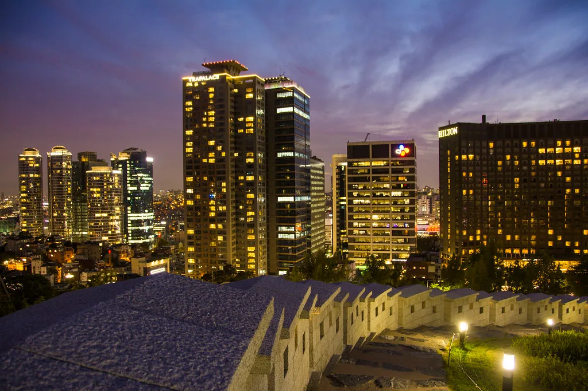

서울 첫 열대야에 폭염특보 확산…"나오는 순간 사우나"
서울에서 올여름 첫 열대야가 관측된 데 이어 전국적으로 무더위가 이어지고 있다. 서울은 최고기온 33.2도를 기록하며 올해 첫 폭염일을 나타냈고, 경기 양주시 은현면에서는 36.8도까지 오르며 지역 역대 최고기온 극값을 새로 썼다. 수도권 곳곳의 낮 최고기온이 35도를 웃돌면서 사실상 폭염이 절정으로 치닫는 모습이다. 장마가 끝난 직후 곧바로 무더위가 몰아치면서, 체감상 여름이 한꺼번에 찾아온 듯한 분위기다.
기상당국은 이번 무더위의 원인으로 두 겹으로 겹친 고기압을 꼽았다. 장마전선을 밀어 올리며 세력을 키운 북태평양 고기압이 한반도 상공을 덮은 가운데, 북쪽에서는 티베트 고기압까지 가세하면서 뜨거운 공기가 이불처럼 두 겹으로 한반도를 감싸고 있다는 설명이다. 두 고기압이 동시에 자리를 잡으면서 구름이 잘 형성되지 않아, 낮 동안 강한 햇볕이 지표면을 그대로 달구는 상황이 이어지고 있다.

밤에도 열기가 식지 않는 열대야 현상도 함께 확산되고 있다. 남부 일부 지역과 제주에서 먼저 나타난 열대야는 이후 수도권까지 번지며, 밤사이 최저기온이 25도 아래로 떨어지지 않는 무더운 밤이 이어지는 중이다. 열대야가 이어지면 숙면을 취하기 어려워 다음 날 활동에도 지장을 줄 수 있어, 냉방기기 사용이 크게 늘고 있다. 시민들 사이에서는 밖에 나오는 순간 사우나에 들어온 것 같다는 반응이 나올 정도로 체감 더위가 크다는 목소리가 이어진다.
이런 날씨에 시민들의 생활 패턴도 달라지고 있다. 한낮 외출을 피해 이른 아침이나 늦은 저녁에 운동이나 산책을 하는 이들이 늘었고, 대형마트나 백화점, 도서관 등 냉방시설을 갖춘 실내 공간을 찾는 발길도 부쩍 잦아졌다. 계곡과 해수욕장 등 피서지에도 더위를 피하려는 인파가 몰리고 있으며, 물놀이 용품이나 휴대용 선풍기 같은 여름 상품 판매량도 눈에 띄게 늘어난 것으로 나타났다.
전력 사용량도 무더위와 함께 가파르게 늘고 있다. 냉방기기 가동이 집중되는 낮 시간대에는 전력수급 관리에도 비상이 걸려, 관련 기관들이 예비 전력 확보와 수요 관리에 촉각을 곤두세우고 있다.

기상청은 당분간 이번 폭염과 열대야가 계속될 것으로 내다보고 있다. 두 고기압이 쉽게 물러나지 않는 만큼, 무더위가 꺾이기까지는 다소 시간이 걸릴 것이라는 전망이다. 일부 지역에서는 이번 주 내내 폭염특보가 유지될 것으로 예보돼, 당분간 무더위와의 싸움이 이어질 전망이다. 야외활동 시 충분한 수분 섭취와 휴식이 필요하다는 당부도 함께 나온다.
휴가철과 겹친 이번 폭염은 여행·레저 업계에도 영향을 미치고 있다. 시원한 계곡이나 바닷가를 낀 지역의 숙박·관광 수요가 늘어나는 반면, 한낮 실외 활동을 동반하는 프로그램은 일정을 조정하는 사례도 늘고 있는 것으로 전해졌다. 일부 지자체는 폭염 속 안전사고를 우려해 계곡·하천 안전요원 배치를 늘리는 등 대응에 나서고 있다. 폭염과 열대야가 언제까지 이어질지에 시민들의 관심이 쏠리는 가운데, 당분간은 무더위에 대비한 생활 관리가 필요할 것으로 보인다. 본격적인 여름 휴가철을 앞두고 있는 만큼, 무더위 속에서도 안전하게 여름을 나기 위한 각자의 대비가 요구되는 시점이다.